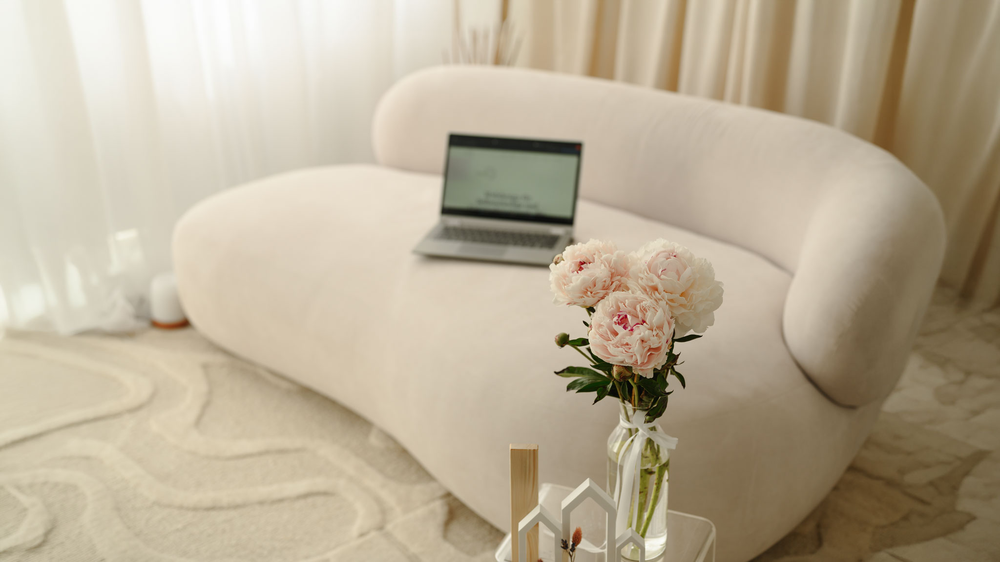

DIGITAL ATELIER · WEBDESIGN · BRANDING · SEO
Webdesign & Branding für moderne Marken mit Persönlichkeit
Premium Websites, Branding und visuelle Markenauftritte für Selbstständige, Kreative und Unternehmer:innen.
Willkommen im Digital Atelier von Anna Duleba – Ihrem Studio für Webdesign, Branding, SEO und Personal Branding Fotografie in Karlsruhe und Walzbachtal. Ich entwickle moderne Markenauftritte für Selbstständige, kreative Unternehmer:innen und Premium-Dienstleister, die online sichtbar werden möchten – stilvoll, strategisch und emotional.
Eine starke Website ist heute weit mehr als nur eine digitale Visitenkarte. Sie entscheidet darüber, wie professionell Ihre Marke wahrgenommen wird, wie viel Vertrauen entsteht und ob Besucher zu echten Anfragen werden. Deshalb verbinde ich Webdesign, Markenstrategie, Bildsprache und SEO zu einem stimmigen Gesamtauftritt.
Webdesign mit Atmosphäre statt Baukasten-Optik
Viele Websites funktionieren technisch – aber sie fühlen sich nicht nach der Marke dahinter an. Farben passen nicht zur Sprache. Bilder erzählen keine Geschichte. Der Aufbau wirkt beliebig.
Im Digital Atelier entstehen deshalb keine austauschbaren Templates, sondern visuelle Markenwelten: ruhig, modern, hochwertig und emotional durchdacht.
- Premium Webdesign mit modernem Editorial-Look
- Branding & Markenstrategie für klare Positionierung
- SEO optimierte Inhalte für bessere Sichtbarkeit bei Google
- Personal Branding Fotografie für Vertrauen und Wiedererkennung
- Visuelle Markenführung mit Farben, Typografie und Bildsprache
Für wen ist das Digital Atelier gedacht?
Ich arbeite vor allem mit:
- Fotograf:innen
- Coaches & Kreativen
- Beauty- & Lifestyle-Brands
- Selbstständigen Frauen
- modernen Premium-Dienstleistern
- kleinen Unternehmen mit Anspruch an Ästhetik und Qualität
Besonders wichtig ist mir, dass eine Marke nicht nur „schön aussieht“, sondern sich konsistent anfühlt – auf der Website, in Social Media, in Bildern und in der gesamten Kommunikation.
Branding, SEO & Sichtbarkeit aus einer Hand
Durch meine Erfahrung als Fotografin denke ich Marken visuell. Gleichzeitig entwickle ich Websites strategisch mit Blick auf SEO, Benutzerführung und Conversion.
Das bedeutet: Ihre Website soll nicht nur beeindrucken – sie soll gefunden werden.
Deshalb optimiere ich Seiten gezielt für Suchbegriffe wie: Webdesign Karlsruhe, Branding Karlsruhe, SEO für Selbstständige, Personal Branding Fotografie oder Premium Webdesign Deutschland.
Digital Atelier: Branding, Fotografie, SEO und Webdesign als eine gemeinsame visuelle Sprache.
Warum Kunden mit mir arbeiten
Meine Kund:innen schätzen besonders die Verbindung aus:
- strategischem Denken
- visueller Ästhetik
- emotionalem Storytelling
- technischer Umsetzung
- SEO Verständnis
- und einer sehr persönlichen Zusammenarbeit
Gemeinsam entwickeln wir einen Markenauftritt, der hochwertig aussieht, Vertrauen schafft und langfristig sichtbar bleibt.
Projekt starten
Sie möchten eine Website, die professionell wirkt, emotional berührt und Ihre Marke wirklich repräsentiert?
Dann freue ich mich auf Ihre Anfrage.